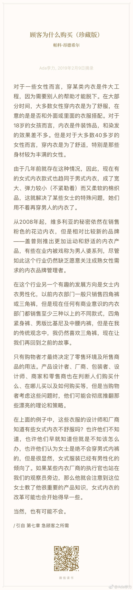

听起来消费细分领域还是有很多机会。//@钟烧饼:在欧洲这种内衣和传统注意美观修形的内衣市场几乎一样大，这几年运动内衣也特别火，耐克安德玛都做出品类标杆了。@Ada李力:#创业#女性内衣缺少舒适度，以至于有些女性开始买男性内衣？不知道目前是不是这个现象，但至少我看到的内衣广告都是在宣传如何让胸更挺更丰满，但极少强调舒适。从我自己的购买经验看，这些强调功能与美观的内衣，基本上都不会舒适。是商家没有发现这种舒适内衣的商机吗？我觉得不是，而是放弃内衣功能而只注重舒适的女性，通常也不属于内衣消费强的群体。这个群体，既不会买高价内衣，也不会频繁地更换内衣。所以，发现需求不算什么，发现有支付能力的，未被满足的需求才是真发现。